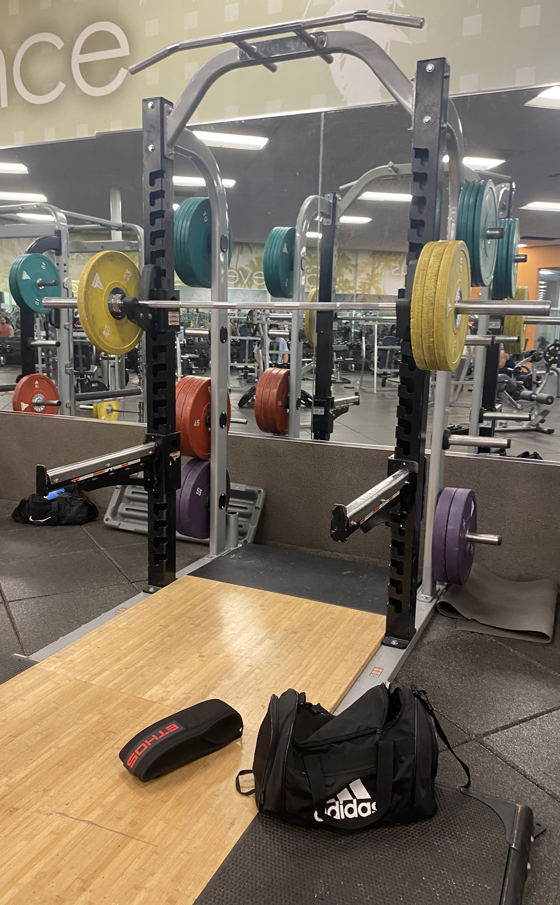

A Solid Gym Bar for Most Lifters: The LA Fitness Olympic Bar Review

Image credit: Marcos Sanchez, “Olympic Bar Review”
By Marcos Sanchez | Published 29 March 2026
Rating: 4/5 ★★★★☆
- Item: Olympic Bar
- Location: LA Fitness
- Type: Gym equipment
- Best for: Bench press, incline variations, squats, deadlifts, shoulder press, and more
- Note: I do not own this, but I use it at LA fitness often >10 times per week
Pros
- Great ring placement
- Comfortable grip
- Works well across a lot of main lifts
Cons
- Still a commercial grade olympic gym bar
- Not meant to compete with premium power bars
- Quality can vary a bit from rack to rack
The olympic barbells at LA Fitness are used in every place in squat and bench racks respectively. These barbells are noted for main use in lots of different lifts: bench press, incline variation, squats, deadlifts, shoulder pressing, and more. One of its best features is the ring placement which is a nice visual indicator, for example on bench press, the inner rings make it easy to line up the hands at a consistent width without needing to adjust repeatedly before every set. That makes setup quicker and gives the bar a more repeatable feel, which matters when trying to focus on form and progressive overload instead of constantly checking hand position. The same feature helps with squats too, since the spacing makes it easier to find a comfortable grip width before unracking. Consistency like this is undervalued a lot, as people don't realize how other bars might have no rings so it becomes reliant on you eyeballing the distance. Even for other bars, with rings they might have placements designed for other uses cases and have the rings be very spread out defeating the flexibility use case of the rings. So for a bodybuilder who values consistency, that is a bigger benefit than it might seem at first.
Another reason the LA Fitness Olympic bar stands out is its grip. A lot of commercial gym bars either feel too passive and worn down or overly rough in a way that makes higher-volume sets uncomfortable. The LA Fitness bar usually sits in a good middle ground. The knurling gives enough grip for movements like rows, Romanian deadlifts, bench press, and squats without tearing up the hands too quickly. That makes it more practical for bodybuilding than a bar that is designed only for extremely heavy strength work. Bodybuilding focused workouts often involve a lot of volume, so comfort matters just as much as raw performance. The bar also feels versatile because it works well for several main movements rather than feeling specialized for just one lift. If you bought this bar (which is available for retail purchase) it would be a solid choice for an average gym member who wants one bar that can handle most of their program.
Its weaknesses mostly come from the fact that it is still a general-use commercial gym bar. It is not meant to compete with premium power bars or highly specialized barbells, and that becomes more noticeable as a lifter gets stronger or more experienced. Some bars may feel more worn than others depending on how often they are used, so the overall quality can vary slightly from rack to rack.
Even with those specific limits, the LA Fitness Olympic bar is still a very good bodybuilding bar for most people. Its ring placement makes setup easy, its grip is comfortable and secure, and it feels reliable across the lifts most members actually perform. It may not be ideal for elite-level strength work, but for everyday training it succeeds because it's simple, consistent, and comfortable to use. For more on bench press setup, this kind of consistent hand placement matters even more.
Access links: LA Fitness HomePage
Back to Top